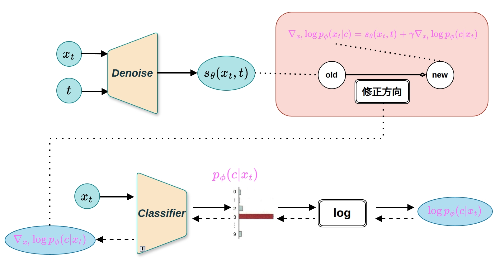
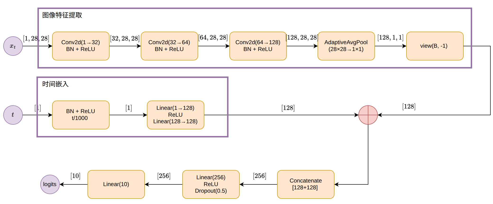
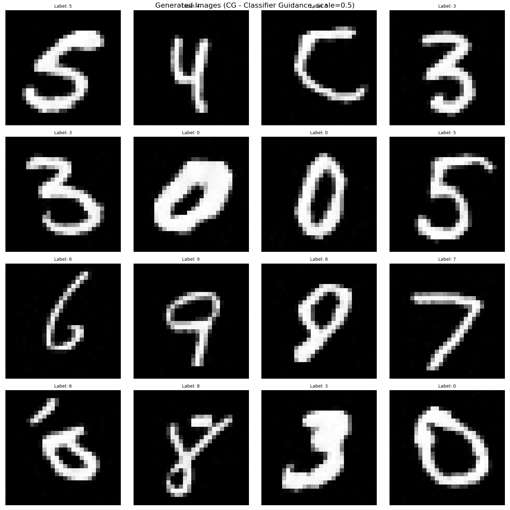
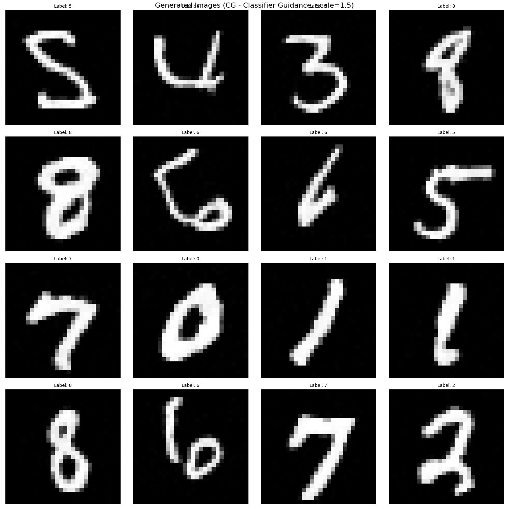
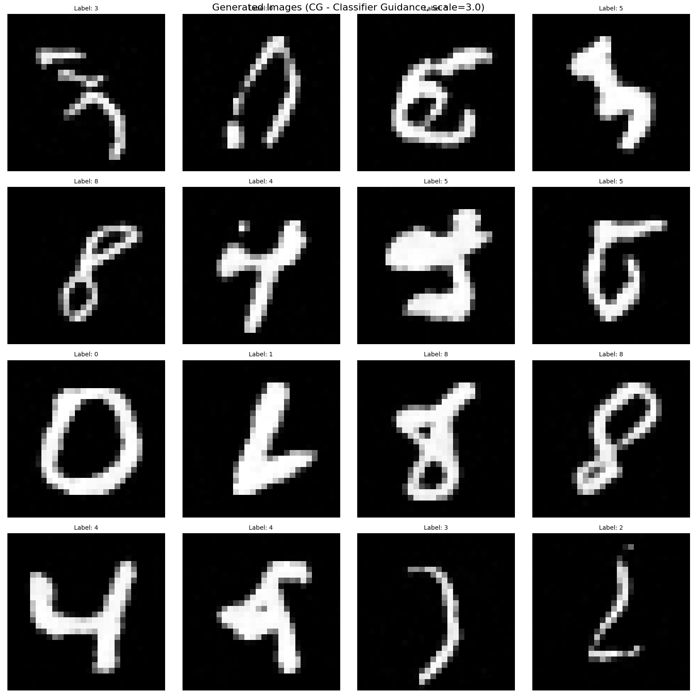
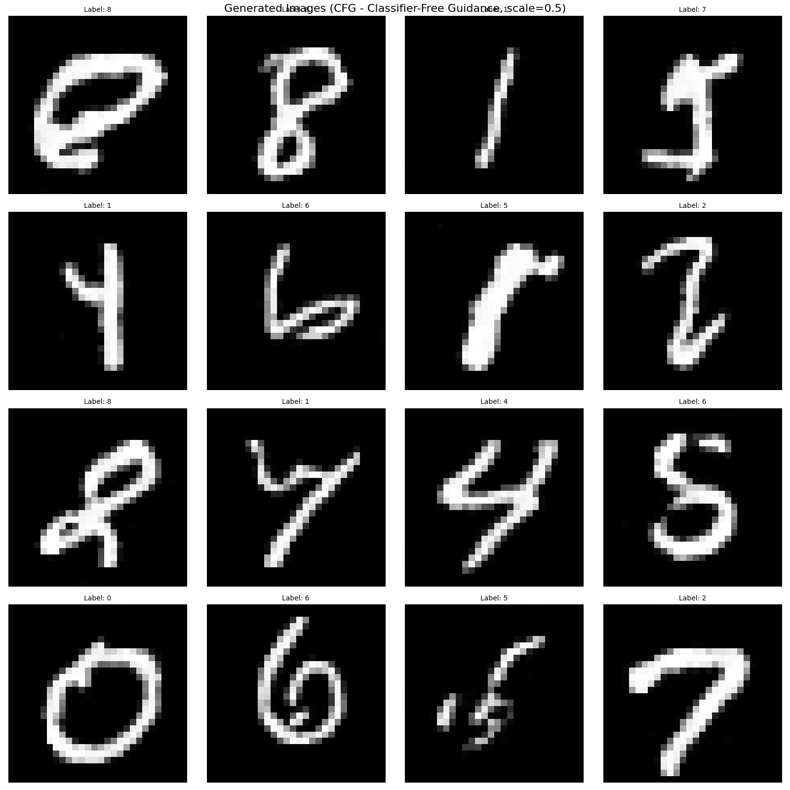
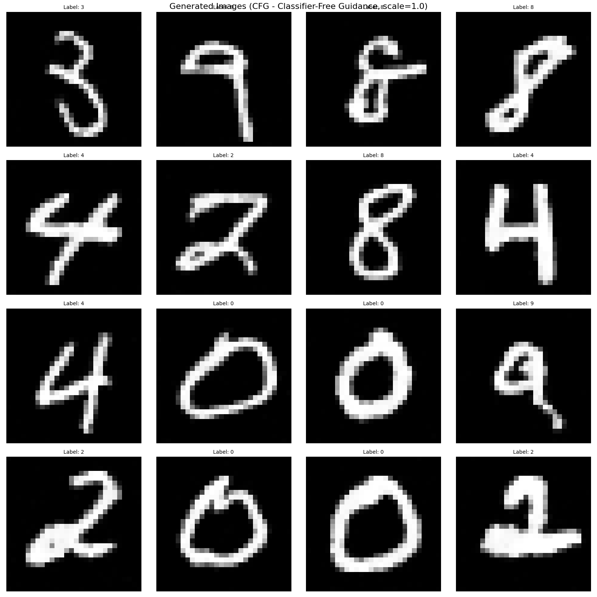
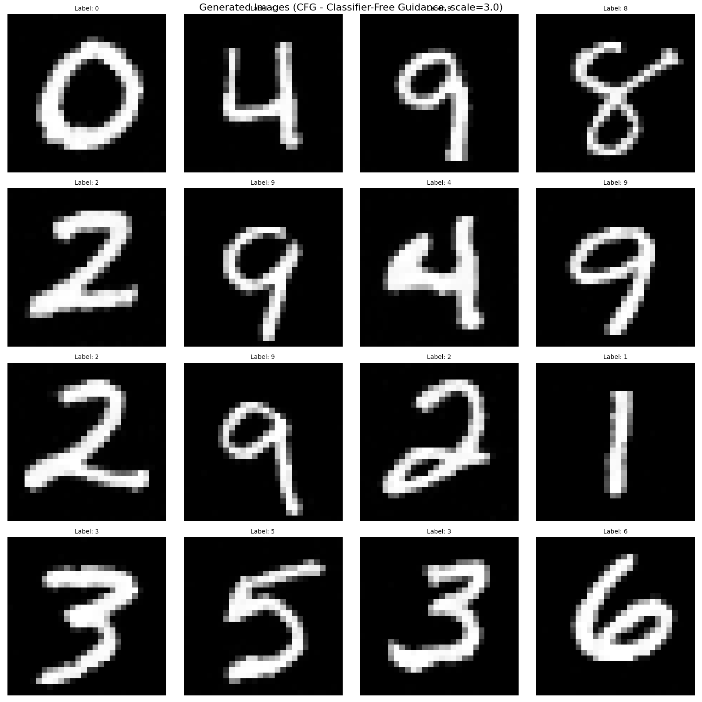

在理论篇中，我们介绍了Classifier Guidance（分类器引导）和Classifier-Free Guidance（无分类器引导）的基本原理。本章将从代码实现的角度，详细介绍这两种引导方法的具体实现细节。

图1 Classifier Guidance架构图:常规的扩散模型（得分函数）与分类器相结合，通过权重参数 \(\gamma\) 调整分类器的贡献度
图2 Classifier-Free Guidance架构图:使用得分函数的神经网络实现的无分类器引导的条件生成模型
根据理论篇的内容，Classifier Guidance和Classifier-Free Guidance都通过调整得分函数来实现更强的条件控制，但在实现方式上存在显著差异。
核心思想:使用单独训练的分类器提供对抗梯度，增强条件控制。
引导公式: \[\nabla_{x_t} \log p(x_t|c) \approx s_\theta(x_t, t) + \gamma \nabla_{x_t} \log p(c|x_t)\]
其中:
实现要点: - 需要单独训练一个分类器模型 - 在采样时通过梯度反向传播计算对抗梯度 - 将对抗梯度与无条件得分相加
核心思想:通过条件dropout在单一模型中同时学习条件和无条件得分函数。
引导公式: \[\nabla_{x_t} \log p(x_t|c) \approx \gamma \nabla_{x_t} \log p(x_t|c) + (1-\gamma) \nabla_{x_t} \log p(x_t)\]
等价于: \[s_{guided} = s_\theta(x_t, t, \emptyset) + \gamma (s_\theta(x_t, t, c) - s_\theta(x_t, t, \emptyset))\]
其中:
实现要点: - 训练时随机丢弃条件信息（10%-20%概率） - 采样时同时计算条件和无条件预测 - 通过插值公式组合两种预测
在DPM三种实现对比篇中，我们发现其实使用得分函数预测的效果并不是很好，所以，我们可以将得分函数做一下变形，变成预测噪声表达的CG和CFG。
在扩散模型中，得分函数与噪声预测之间存在以下关系:
\[\nabla_{x_t} \log p(x_t) = -\frac{\epsilon_\theta(x_t, t)}{\sqrt{1 - \bar{\alpha}_t}} \tag{8.1}\]
这意味着得分函数 \(s_\theta(x_t, t) = \nabla_{x_t} \log p(x_t)\) 与噪声预测 \(\epsilon_\theta(x_t, t)\) 成正比:
\[s_\theta(x_t, t) = -\frac{\epsilon_\theta(x_t, t)}{\sqrt{1 - \bar{\alpha}_t}} = -\frac{\epsilon_\theta(x_t, t)}{\sigma_t} \tag{8.2}\]
对于条件得分函数，同样有:
\[s_\theta(x_t, t, c) = -\frac{\epsilon_\theta(x_t, t, c)}{\sqrt{1 - \bar{\alpha}_t}} = -\frac{\epsilon_\theta(x_t, t, c)}{\sigma_t} \tag{8.3}\]
其中 \(\sigma_t = \sqrt{1 - \bar{\alpha}_t}\) 是时间步 \(t\) 的噪声标准差。
得分函数版本（理论形式）:
\[\nabla_{x_t} \log p(x_t|c) = \nabla_{x_t} \log p(x_t) + \gamma \nabla_{x_t} \log p(c|x_t) \tag{8.4}\]
使用得分函数表示:
\[s_{guided}(x_t, t, c) = s_\theta(x_t, t) + \gamma \nabla_{x_t} \log p(c|x_t) \tag{8.5}\]
推导噪声预测版本:
推导过程:
步骤1: 从得分函数版本的引导公式开始
\[s_{guided}(x_t, t, c) = s_\theta(x_t, t) + \gamma \nabla_{x_t} \log p(c|x_t)\]
步骤2: 代入得分函数与噪声预测的关系
根据公式 \(s_\theta(x_t, t) = -\frac{\epsilon_\theta(x_t, t)}{\sigma_t}\)，我们有:
\[s_\theta(x_t, t) = -\frac{\epsilon_\theta(x_t, t)}{\sigma_t}, \quad s_{guided}(x_t, t, c) = -\frac{\epsilon_{guided}}{\sigma_t}\]
步骤3: 将步骤2的关系代入步骤1
\[-\frac{\epsilon_{guided}}{\sigma_t} = -\frac{\epsilon_\theta(x_t, t)}{\sigma_t} + \gamma \nabla_{x_t} \log p(c|x_t)\]
步骤4: 两边同时乘以 \(-\sigma_t\)
\[\epsilon_{guided} = \epsilon_\theta(x_t, t) - \gamma \sigma_t \nabla_{x_t} \log p(c|x_t)\]
说明:以上推导使用的是无条件扩散模型 \(\epsilon_\theta(x_t, t)\)，这符合Classifier Guidance的理论定义。
代码实现中的实际做法:
在实际代码实现中，由于我们训练的是条件扩散模型（可以接受条件 \(c\) 作为输入），代码会使用条件扩散模型 \(\epsilon_\theta(x_t, t, c)\) 而不是无条件模型。这样做的原因是:
因此，在实际代码中，公式变为:
\[\epsilon_{guided} = \epsilon_\theta(x_t, t, c) + \gamma \sigma_t \nabla_{x_t} \log p(c|x_t) \tag{8.6}\]
噪声预测版本（代码实现）:
\[\boxed{\epsilon_{guided} = \epsilon_\theta(x_t, t, c) + \gamma \sigma_t \nabla_{x_t} \log p(c|x_t)} \tag{8.7}\]
其中:
关键点:在代码实现中，我们直接使用噪声预测，分类器梯度需要乘以 \(\sigma_t\) 来匹配噪声预测的尺度。
得分函数版本（理论形式）:
\[\nabla_{x_t} \log p(x_t|c) = s_\theta(x_t, t, \emptyset) + \gamma (s_\theta(x_t, t, c) - s_\theta(x_t, t, \emptyset)) \tag{8.8}\]
推导噪声预测版本:
推导过程:
步骤1: 从得分函数版本的引导公式开始
\[s_{guided}(x_t, t, c) = s_\theta(x_t, t, \emptyset) + \gamma (s_\theta(x_t, t, c) - s_\theta(x_t, t, \emptyset))\]
步骤2: 代入得分函数与噪声预测的关系
根据公式 \(s_\theta(x_t, t, c) = -\frac{\epsilon_\theta(x_t, t, c)}{\sigma_t}\)，我们有:
\[s_\theta(x_t, t, c) = -\frac{\epsilon_\theta(x_t, t, c)}{\sigma_t}, \quad s_\theta(x_t, t, \emptyset) = -\frac{\epsilon_\theta(x_t, t, \emptyset)}{\sigma_t}, \quad s_{guided}(x_t, t, c) = -\frac{\epsilon_{guided}}{\sigma_t}\]
步骤3: 将步骤2的关系代入步骤1
\[-\frac{\epsilon_{guided}}{\sigma_t} = -\frac{\epsilon_\theta(x_t, t, \emptyset)}{\sigma_t} + \gamma \left(-\frac{\epsilon_\theta(x_t, t, c)}{\sigma_t} + \frac{\epsilon_\theta(x_t, t, \emptyset)}{\sigma_t}\right)\]
步骤4: 展开并整理
\[-\frac{\epsilon_{guided}}{\sigma_t} = -\frac{\epsilon_\theta(x_t, t, \emptyset)}{\sigma_t} - \gamma \frac{\epsilon_\theta(x_t, t, c) - \epsilon_\theta(x_t, t, \emptyset)}{\sigma_t}\]
步骤5: 两边同时乘以 \(-\sigma_t\)（注意:\(\sigma_t\) 在相减时被消去）
\[\epsilon_{guided} = \epsilon_\theta(x_t, t, \emptyset) + \gamma (\epsilon_\theta(x_t, t, c) - \epsilon_\theta(x_t, t, \emptyset))\]
噪声预测版本（代码实现）:
\[\boxed{\epsilon_{guided} = \epsilon_\theta(x_t, t, \emptyset) + \gamma (\epsilon_\theta(x_t, t, c) - \epsilon_\theta(x_t, t, \emptyset))} \tag{8.9}\]
其中:
关键点:在Classifier-Free Guidance中，噪声预测的引导公式形式与得分函数形式完全一致，这是因为两者都是线性插值的形式，比例系数 \(\sigma_t\) 在相减时被消去了。
Classifier Guidance需要一个能够对噪声图像进行分类的神经网络。分类器接收噪声图像 \(x_t\) 和时间步 \(t\)，输出类别概率 \(p_\phi(c|x_t)\)。
我们实现了一个分类器，其架构如图3所示:

图3 Classifier架构图:包含图像特征提取分支、时间嵌入分支和特征融合分类头
实现的代码如下:
import torch
from torch import nn
import torch.nn.functional as F
class Classifier(nn.Module):
"""
分类器:用于 Classifier Guidance
输入:噪声图像 x_t 和时间步 t
输出:类别 logits
"""
def __init__(self, img_size=28, in_channels=1, num_classes=10, time_embed_dim=128):
super().__init__()
self.img_size = img_size
self.in_channels = in_channels
self.num_classes = num_classes
self.time_embed_dim = time_embed_dim
# 时间嵌入
self.time_mlp = nn.Sequential(
nn.Linear(1, time_embed_dim),
nn.ReLU(),
nn.Linear(time_embed_dim, time_embed_dim)
)
# 图像特征提取
self.conv1 = nn.Conv2d(in_channels, 32, 3, padding=1)
self.bn1 = nn.BatchNorm2d(32)
self.conv2 = nn.Conv2d(32, 64, 3, padding=1)
self.bn2 = nn.BatchNorm2d(64)
self.conv3 = nn.Conv2d(64, 128, 3, padding=1)
self.bn3 = nn.BatchNorm2d(128)
self.pool = nn.AdaptiveAvgPool2d(1)
# 融合时间和图像特征
self.fc = nn.Sequential(
nn.Linear(128 + time_embed_dim, 256),
nn.ReLU(),
nn.Dropout(0.5),
nn.Linear(256, num_classes)
)
def forward(self, x, t):
"""
Args:
x: [B, C, H, W] 噪声图像
t: [B] 时间步
Returns:
logits: [B, num_classes] 类别 logits
"""
B = x.shape[0]
# 时间嵌入
t = t.float().view(B, 1) / 1000.0 # 归一化到 [0, 1]
t_emb = self.time_mlp(t) # [B, time_embed_dim]
# 图像特征
x = F.relu(self.bn1(self.conv1(x)))
x = F.relu(self.bn2(self.conv2(x)))
x = F.relu(self.bn3(self.conv3(x)))
x = self.pool(x) # [B, 128, 1, 1]
x = x.view(B, -1) # [B, 128]
# 融合特征
combined = torch.cat([x, t_emb], dim=1) # [B, 128 + time_embed_dim]
logits = self.fc(combined) # [B, num_classes]
return logits关键设计:
Linear(1 → 128) + ReLU + Linear(128 → 128)，输出128维时间嵌入向量Conv2d(1 → 32, 3×3, padding=1) + BatchNorm + ReLUConv2d(32 → 64, 3×3, padding=1) + BatchNorm + ReLUConv2d(64 → 128, 3×3, padding=1) + BatchNorm + ReLUAdaptiveAvgPool2d(1) → view(B, -1)，输出128维图像特征向量torch.cat([图像特征(128维), 时间嵌入(128维)]) → 256维Linear(256 → 256) + ReLU + Dropout(0.5)Linear(256 → 10)，输出类别logits在去噪过程中，我们使用分类器的梯度来引导生成过程:
def denoise(self, model, x, t, labels=None, classifier=None, classifier_scale=1.0):
"""反向去噪过程:使用 Classifier Guidance
Args:
model: UNet 模型
x: 当前噪声图像
t: 时间步
labels: 条件标签
classifier: 分类器模型（用于CG）
classifier_scale: CG 引导强度（γ），越大条件控制越强
"""
T = self.num_timesteps
assert (t >= 1).all() and (t <= T).all()
t_idx = t - 1
alpha = self.alphas[t_idx]
alpha_bar = self.alpha_bars[t_idx]
alpha_bar_prev = self.alpha_bars[t_idx-1]
N = alpha.size(0)
alpha = alpha.view(N, 1, 1, 1)
alpha_bar = alpha_bar.view(N, 1, 1, 1)
alpha_bar_prev = alpha_bar_prev.view(N, 1, 1, 1)
model.eval()
with torch.no_grad():
eps = model(x, t, labels) # 条件预测
# Classifier Guidance: 使用分类器梯度引导
if classifier is not None and labels is not None:
x.requires_grad_(True)
logits = classifier(x, t)
log_probs = F.log_softmax(logits, dim=-1)
# 选择目标类别的 log 概率
selected = log_probs[range(len(logits)), labels.view(-1)]
# 计算梯度:∇_{x_t} log p(c|x_t)
grad = torch.autograd.grad(selected.sum(), x, create_graph=False, retain_graph=False)[0]
# CG 公式: eps_guided = eps_cond + γ * σ_t * ∇_{x_t} log p(c|x_t)
# 其中 σ_t = sqrt(1 - alpha_bar)
sigma_t = torch.sqrt(1 - alpha_bar)
eps = eps + classifier_scale * sigma_t * grad
x.requires_grad_(False)
model.train()
noise = torch.randn_like(x, device=self.device)
noise[t == 1] = 0 # no noise at t=1
mu = (x - ((1-alpha) / torch.sqrt(1-alpha_bar)) * eps) / torch.sqrt(alpha)
std = torch.sqrt((1-alpha) * (1-alpha_bar_prev) / (1-alpha_bar))
return mu + noise * std关键步骤:
条件预测:先使用条件扩散模型预测 \(\epsilon_\theta(x_t, t, c)\)
梯度计算:
x.requires_grad_(True)引导组合:
数学细节:
在扩散模型的采样过程中，噪声预测 \(\epsilon\) 与得分函数的关系为: \[\epsilon_\theta(x_t, t) \approx -\sqrt{1 - \bar{\alpha}_t} \nabla_{x_t} \log p(x_t)\]
因此，分类器梯度需要乘以 \(\sigma_t = \sqrt{1 - \bar{\alpha}_t}\) 才能与噪声预测在同一尺度上。
分类器需要单独训练，使其能够对任意噪声水平的图像进行分类:
# 训练分类器
if train_classifier:
print('\n开始训练分类器...')
classifier.train()
for epoch in range(classifier_epochs):
for images, labels in train_loader:
classifier_optimizer.zero_grad()
x = images.to(device)
labels = labels.to(device)
# 随机采样时间步并加噪
t = torch.randint(1, num_timesteps+1, (len(x),), device=device)
x_noisy, _ = diffuser.diffusion(x, t)
# 分类器预测
logits = classifier(x_noisy, t)
loss = F.cross_entropy(logits, labels)
loss.backward()
classifier_optimizer.step()关键点: - 随机噪声采样:每次训练时随机采样时间步 \(t\)，对图像加噪 - 时间步输入:分类器需要时间步信息来判断噪声水平 - 损失函数:使用交叉熵损失训练分类器
使用Classifier Guidance进行条件生成:
def sample(self, model, x_shape, labels=None, classifier=None, classifier_scale=1.0):
"""从随机噪声生成图像（使用 Classifier Guidance）
Args:
model: UNet 模型
x_shape: 生成图像的形状 (batch_size, channels, height, width)
labels: 可选的条件标签，如果为None则随机生成
classifier: 分类器模型（用于CG）
classifier_scale: CG 引导强度（γ），默认1.0
"""
batch_size = x_shape[0]
x = torch.randn(x_shape, device=self.device)
if labels is None:
labels = torch.randint(0, 10, (batch_size,), device=self.device)
for i in tqdm(range(self.num_timesteps, 0, -1), desc='Sampling (CG)'):
t = torch.tensor([i] * batch_size, device=self.device, dtype=torch.long)
x = self.denoise(model, x, t, labels, classifier=classifier, classifier_scale=classifier_scale)
images = [self.reverse_to_img(x[i]) for i in range(batch_size)]
return images, labels生成流程: 1. 从标准正态分布采样初始噪声 \(x_T\) 2. 指定条件标签 \(c\) 3. 迭代去噪:在每个时间步使用分类器梯度引导去噪方向 4. 最终生成符合条件 \(c\) 的图像
Classifier-Free Guidance的核心是在训练时随机丢弃条件信息，使模型同时学习条件和无条件生成:
if train:
for epoch in range(epochs):
for images, labels in train_loader:
optimizer.zero_grad()
x = images.to(device)
labels = labels.to(device)
t = torch.randint(1, num_timesteps+1, (len(x),), device=device)
# CFG 训练:随机丢弃条件（默认10%概率）
# 这样模型同时学习条件生成和无条件生成
cond_dropout_prob = config['training'].get('cond_dropout_prob', 0.1)
if np.random.random() < cond_dropout_prob:
labels = None
x_noisy, noise = diffuser.diffusion(x, t)
noise_pred = model(x_noisy, t, labels) # 传入labels（可能为None）
loss = F.mse_loss(noise, noise_pred)
loss.backward()
optimizer.step()关键点: - 条件Dropout:以10%-20%的概率将 labels 设为 None - 统一训练:同一个模型同时学习条件和无条件生成 - 无条件表示:当 labels=None 时，模型学习无条件分布 \(p(x_t)\)
U-Net实现:
U-Net需要能够处理 labels=None 的情况:
def forward(self, x, timesteps, labels=None):
v = pos_encoding(timesteps, self.time_embed_dim, x.device)
# 如果有标签，将标签嵌入加到时间嵌入中
# 如果 labels=None，则只使用时间嵌入（无条件生成）
if labels is not None and self.label_emb is not None:
v = v + self.label_emb(labels)
# 如果 labels=None，v 只包含时间嵌入，用于无条件生成
# ... 后续处理当 labels=None 时，时间嵌入 \(v\) 只包含时间信息，不包含条件信息，从而实现无条件生成。
在采样时，CFG同时计算条件和无条件预测，然后通过插值公式组合:
def denoise(self, model, x, t, labels=None, guidance_scale=3.0):
"""反向去噪过程:使用 Classifier-Free Guidance
Args:
model: UNet 模型
x: 当前噪声图像
t: 时间步
labels: 条件标签
guidance_scale: CFG 引导强度（γ），越大条件控制越强
"""
T = self.num_timesteps
assert (t >= 1).all() and (t <= T).all()
t_idx = t - 1
alpha = self.alphas[t_idx]
alpha_bar = self.alpha_bars[t_idx]
alpha_bar_prev = self.alpha_bars[t_idx-1]
N = alpha.size(0)
alpha = alpha.view(N, 1, 1, 1)
alpha_bar = alpha_bar.view(N, 1, 1, 1)
alpha_bar_prev = alpha_bar_prev.view(N, 1, 1, 1)
model.eval()
with torch.no_grad():
# CFG: 同时计算条件预测和无条件预测
eps_cond = model(x, t, labels) # 条件噪声预测:ε_θ(x_t, t, c)
eps_uncond = model(x, t, None) # 无条件噪声预测:ε_θ(x_t, t, ∅)
# CFG 公式: eps = eps_uncond + γ * (eps_cond - eps_uncond)
eps = eps_uncond + guidance_scale * (eps_cond - eps_uncond)
model.train()
noise = torch.randn_like(x, device=self.device)
noise[t == 1] = 0 # no noise at t=1
mu = (x - ((1-alpha) / torch.sqrt(1-alpha_bar)) * eps) / torch.sqrt(alpha)
std = torch.sqrt((1-alpha) * (1-alpha_bar_prev) / (1-alpha_bar))
return mu + noise * std关键步骤:
数学解释:
公式 \(\epsilon = \epsilon_{uncond} + \gamma \cdot (\epsilon_{cond} - \epsilon_{uncond})\) 的几何意义是: - 从无条件预测 \(\epsilon_{uncond}\) 出发 - 沿着条件预测 \(\epsilon_{cond}\) 的方向前进 \(\gamma\) 倍的距离 - \(\gamma > 1\) 时，会超越条件预测，增强条件控制
使用Classifier-Free Guidance进行条件生成:
def sample(self, model, x_shape, labels=None, guidance_scale=3.0):
"""从随机噪声生成图像（使用 Classifier-Free Guidance）
Args:
model: UNet 模型
x_shape: 生成图像的形状 (batch_size, channels, height, width)
labels: 可选的条件标签，如果为None则随机生成
guidance_scale: CFG 引导强度（γ），默认3.0
"""
batch_size = x_shape[0]
x = torch.randn(x_shape, device=self.device)
if labels is None:
labels = torch.randint(0, 10, (batch_size,), device=self.device)
for i in tqdm(range(self.num_timesteps, 0, -1), desc='Sampling (CFG)'):
t = torch.tensor([i] * batch_size, device=self.device, dtype=torch.long)
x = self.denoise(model, x, t, labels, guidance_scale=guidance_scale)
images = [self.reverse_to_img(x[i]) for i in range(batch_size)]
return images, labels生成流程: 1. 从标准正态分布采样初始噪声 \(x_T\) 2. 指定条件标签 \(c\) 3. 迭代去噪:在每个时间步同时计算条件和无条件预测，然后组合 4. 最终生成符合条件 \(c\) 的图像
| 特性 | Classifier Guidance | Classifier-Free Guidance |
|---|---|---|
| 额外模型 | 需要单独的分类器模型 | 只需一个条件模型 |
| 训练复杂度 | 需要训练分类器和扩散模型 | 只需训练扩散模型（带条件dropout） |
| 采样计算 | 需要前向传播分类器 + 梯度计算 | 需要两次前向传播（条件+无条件） |
| 梯度计算 | 需要 torch.autograd.grad |
无需梯度计算 |
| 实现难度 | 较高（需要协调两个模型） | 较低（统一在一个模型中） |
| 特性 | Classifier Guidance | Classifier-Free Guidance |
|---|---|---|
| 生成质量 | 较好（依赖分类器质量） | 优秀（更直接的控制） |
| 计算开销 | 较高（分类器前向+梯度计算） | 中等（两次前向传播） |
| 引导强度 | 通过 \(\gamma\) 控制 | 通过 \(\gamma\) 控制 |
| 灵活性 | 需要专门设计噪声分类器 | 通过dropout自然实现 |
我们对比了 Classifier Guidance 在不同 classifier_scale 值下的生成效果:

图4 Classifier Guidance 生成效果（classifier_scale=0.5）:引导强度较低，条件控制较弱，但生成质量较稳定
这是由于我们在训练扩散模型时，没有采用朴素的DDPM模型，采用的是条件扩散模型。

图5 Classifier Guidance 生成效果（classifier_scale=1.5）:引导强度适中，条件控制较好，生成质量与条件匹配度平衡

图6 Classifier Guidance 生成效果（classifier_scale=3.0）:引导强度较高，条件控制强，但可能出现过度引导导致生成质量下降
观察结果: - classifier_scale=0.5:条件控制较弱，但生成稳定 - classifier_scale=1.5:条件控制与生成质量的较好平衡 - classifier_scale=3.0:条件控制过强，可能导致生成质量下降，因为分类器梯度可能过大
我们对比了 Classifier-Free Guidance 在不同 guidance_scale 值下的生成效果:

图7 Classifier-Free Guidance 生成效果（guidance_scale=0.5）:引导强度较低，条件控制较弱

图8 Classifier-Free Guidance 生成效果（guidance_scale=1.0）:标准条件生成，不进行额外引导

图9 Classifier-Free Guidance 生成效果（guidance_scale=3.0）:引导强度较高，条件控制强，且生成质量仍然保持良好
观察结果: - guidance_scale=0.5:条件控制较弱 - guidance_scale=1.0:标准条件生成 - guidance_scale=3.0:条件控制强，生成质量仍然优秀，这是 CFG 相比 CG 的优势
关键发现: 1. CFG 对高引导强度更鲁棒:CFG 的 guidance_scale=3.0 时仍然保持优秀的生成质量，而 CG 的 classifier_scale=3.0 时可能出现质量下降 2. CG 需要更谨慎的引导强度:CG 的推荐 classifier_scale 范围是 1.0-1.5，超过 2.0 容易出现过度引导 3. CFG 的线性插值更稳定:CFG 使用同一模型的线性插值，操作稳定；CG 使用外部分类器的梯度，可能不稳定
原因分析: - CFG:eps = eps_uncond + γ * (eps_cond - eps_uncond) 是有界的线性插值，两个输出来自同一模型，差异有界，操作稳定 - CG:eps = eps_cond + scale * σ_t * grad 添加外部分类器梯度，梯度可能很大且不受控，容易破坏采样轨迹
因此，在实际应用中，如果需要在较高引导强度下保持生成质量，CFG 是更好的选择。
Classifier Guidance和Classifier-Free Guidance都通过调整得分函数来实现更强的条件控制，但在实现方式上存在显著差异:
Classifier Guidance:利用单独训练的分类器提供对抗梯度，增强条件控制。需要额外的分类器模型，训练和采样复杂度较高。
Classifier-Free Guidance:通过条件dropout在单一模型中同时学习条件和无条件得分函数，实现更灵活的控制。只需训练一个模型，实现简单高效。
优先考虑Classifier-Free Guidance: - 实现简单，无需额外的分类器模型 - 训练统一，通过条件dropout自然实现 - 计算高效，只需两次前向传播
考虑Classifier Guidance的场景: - 已有预训练的分类器模型 - 需要更强的条件控制（通过分类器专门优化） - 分类器和扩散模型可以独立优化
在实际应用中，Classifier-Free Guidance通常更受欢迎，因为:
两种方法都为条件生成提供了灵活的控制机制，使得我们可以根据具体需求在生成质量和多样性之间找到最佳平衡点。
Ho, J., Jain, A., & Abbeel, P. (2020). Denoising diffusion probabilistic models. Advances in Neural Information Processing Systems, 33, 6840-6851.
Dhariwal, P., & Nichol, A. (2021). Diffusion models beat gans on image synthesis. Advances in Neural Information Processing Systems, 34, 8780-8794.
Ho, J., & Salimans, T. (2022). Classifier-free diffusion guidance. arXiv preprint arXiv:2207.12598.
《深度学习5:生成模型》
Understanding Diffusion Models: A Unified Perspective. arXiv preprint arXiv:2208.11970. https://arxiv.org/abs/2208.11970
深度学习入门5：生成模型